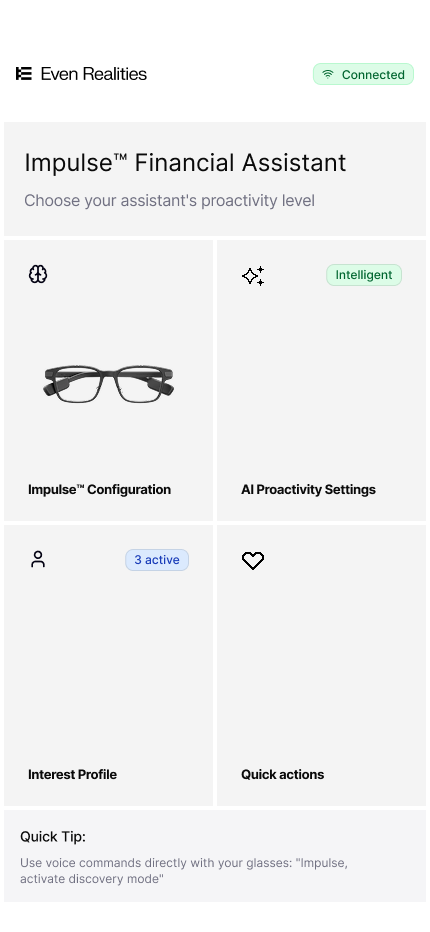
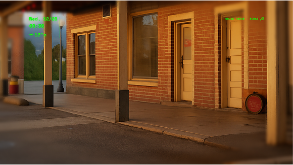
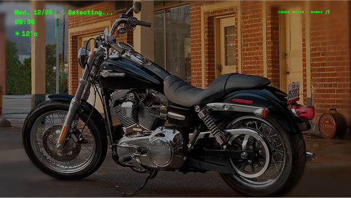
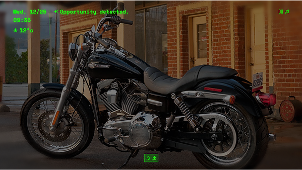
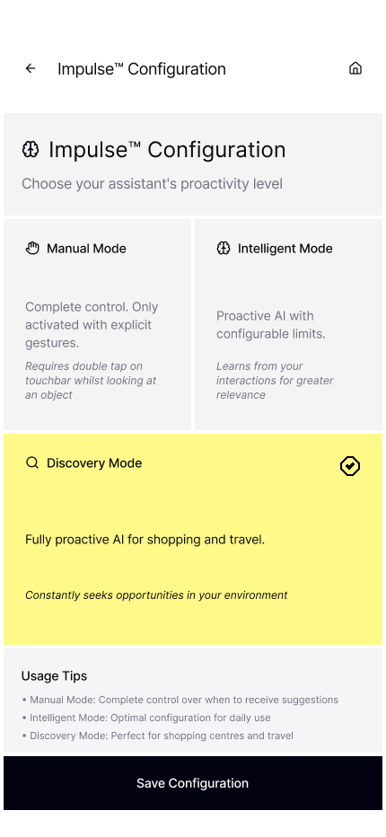
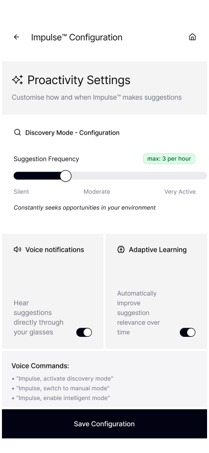
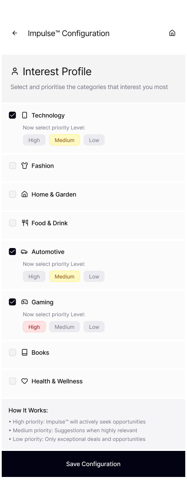
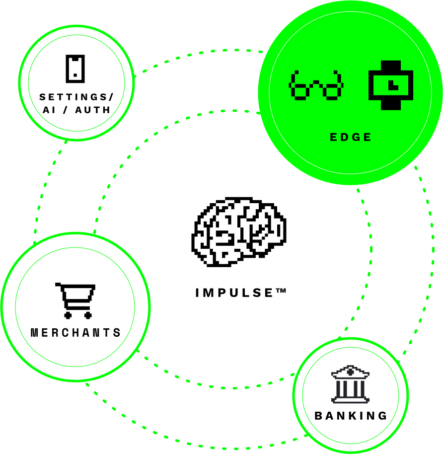

Felipe Amorim
Felipe AmorimImpulse Spend with more clarity.
A speculative experience for contextual finance, designed to bring useful guidance into the moment of purchase.

Make the moment more thoughtful.
Frictionless payment can make it easy to act before considering the longer-term effect. I explored how a personal financial assistant might add useful context without interrupting the moment or taking the decision away from the person.
Bring guidance into context.
I connected a wearable point of interest with a companion finance experience. The concept explores a calm prompt, a view of the available choices, and a deliberate hand-off to the phone when a private or secure action is needed.
A choice with a reason.
Editorial slot · replace before launchShow the constraint, the choice you made, and what that choice changed in the experience.
From a moment of interest to a considered choice.
The wearable offers a light prompt; the companion experience gives the person room to review and decide.



Two paths through the same idea.
Short concept films show how the assistant could support a saving goal or a planned purchase.
A companion that can be tuned.
Settings make the assistant’s presence, suggestions and personalisation visible to the user.



One experience, several trusted parts.
The concept brings together a wearable, a companion app and financial and merchant information. The diagram makes those relationships visible as part of the experience.
